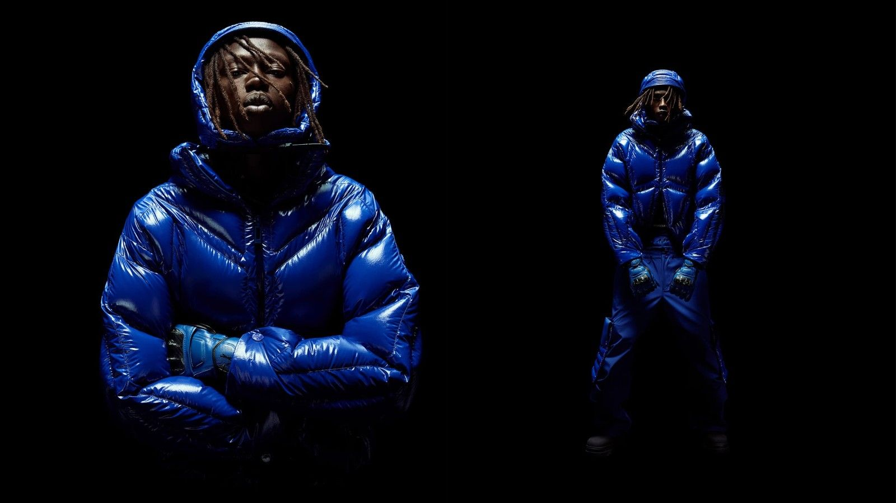
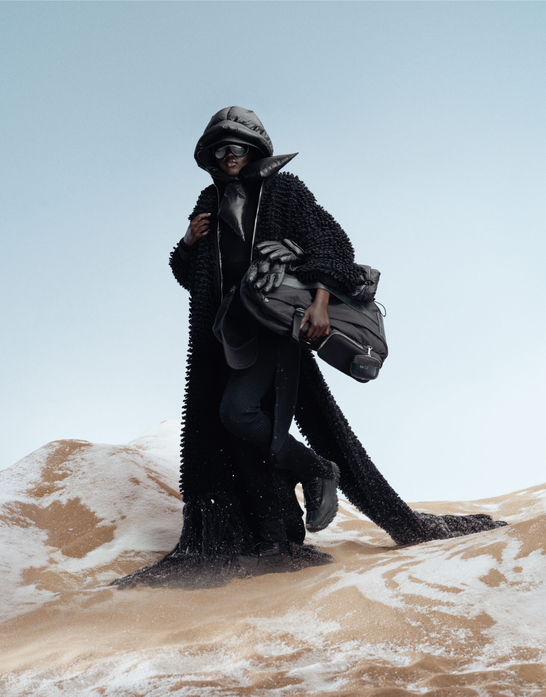
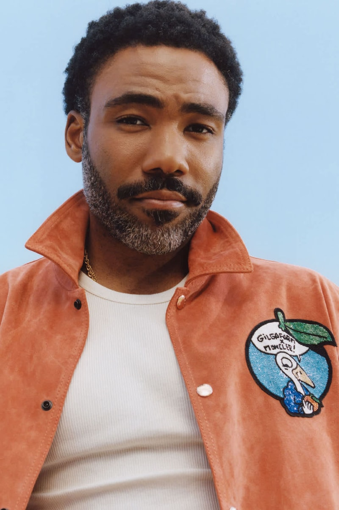
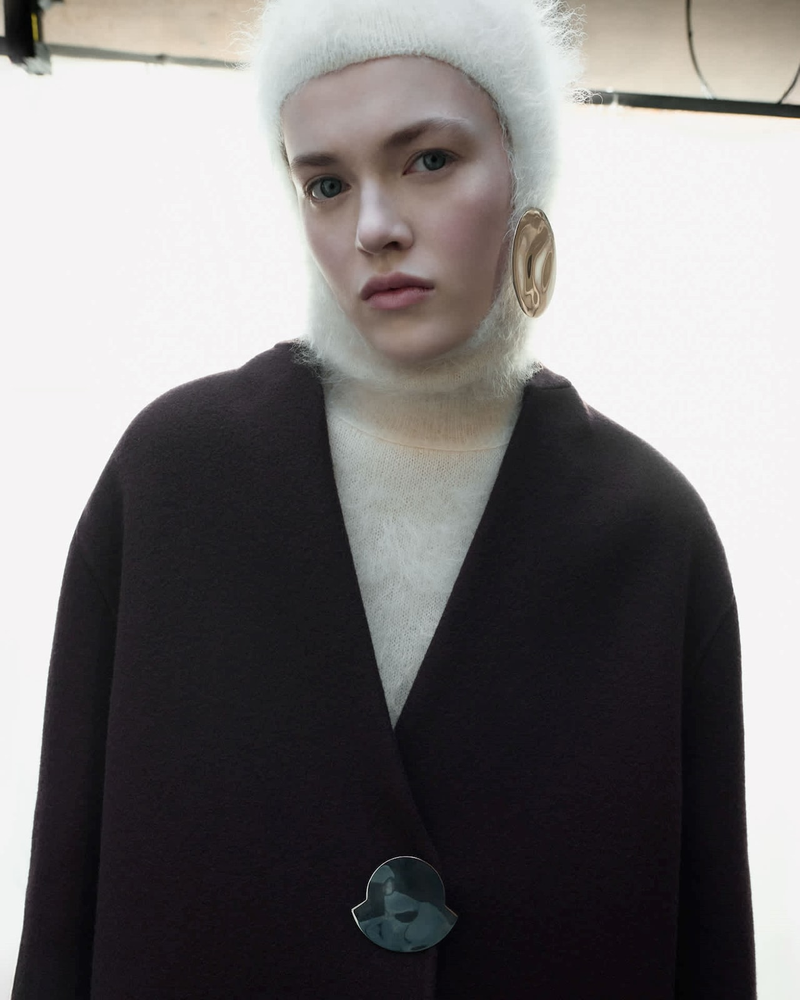

€9.2M average revenue per boutique door, across 295 locations. By any benchmark in luxury retail, that is a high-performing network. Moncler is not opening doors to grow the count — every location has to earn its place, and at this average, underperformers are immediately visible in the P&L. The discipline in real-estate decisions shows in that number.
The 52% Asia concentration is worth examining closely. Asia-Pacific, Japan, and Korea together grew +7% at constant currency in FY2025, while EMEA declined 3%. That reflects a deliberate commercial focus on the markets where the brand resonates most strongly right now. The operational consequence is significant: supply chain priorities, customer service investment, and retail activation are all weighted toward the Asian consumer. When one region drives more than half of revenue, every operational decision follows it.
The Americas at 14% is where the model has an open question. It is growing (+5% at constant currency), and the US market for premium outerwear at Moncler's price point is less developed than Asia. That gap is either an opportunity waiting to be prioritised — or a deliberate choice to deepen the Asia advantage before broadening the geographic base. The investment plan for Americas over the next three to five years will answer which one it is.
My read is that the window is narrowing. The US premium outerwear consumer is earlier in the luxury adoption cycle — brand resistance is lower now than it will be once more European houses push aggressively into North America. That timing advantage does not stay open indefinitely. If Moncler is reading the same market, the next capital allocation cycle should reflect a meaningful shift toward Americas retail presence and brand investment. If it does not, that is a strategic signal too: a deliberate choice to consolidate the Asia position while growth is still there, and enter Americas from a position of strength rather than competitive necessity. Either way, it is the most consequential decision in the business right now — and it will be visible in the next two annual reports.
In February 2018, Moncler CEO Remo Ruffini announced that the brand would no longer follow the traditional two-season fashion calendar. Instead, Moncler would run 8 simultaneous creative directors — each with full creative autonomy — releasing individual capsule collections as drops throughout the year. The strategy was called Moncler Genius.
The core mechanic: no shared seasonal theme, no single creative director, no fixed release windows. Each collaborator brings their own audience and aesthetic. Each drop is a standalone event. Together, they create continuous cultural presence for the brand across markets, aesthetics, and customer segments — without a single collection needing to carry the whole brand.




Moncler Genius has been running for seven years, and no other luxury brand has built a comparable model. The reason is primarily operational, not creative. Running 8 simultaneous creative directors means 8 separate production schedules, 8 supply chain tracks, and 8 distinct retail activations running in parallel throughout the year — all without losing brand coherence. That is a significant coordination challenge, and it requires infrastructure that takes years to build.
Genius currently contributes 5–10% of Moncler's €2.72B revenue. That share tells you what the model actually does: it generates cultural relevance and brand equity, not volume. The commercial returns come from the core Moncler line, which benefits from the visibility that Genius creates continuously throughout the year — rather than in two seasonal bursts. A brand that drops something in February, April, June, August, October, and December never leaves the cultural conversation. That is structurally impossible to achieve with a Spring/Summer and Autumn/Winter model.
The City of Genius event in Shanghai in October 2025 extended this into a large-scale experiential format — separate pavilions for each creative director, each telling a different visual story under the Moncler brand. The operational investment to sustain that, year after year across markets, is exactly what separates Moncler's approach from brands that run one or two collaborations and call it a drops strategy.
My read: Genius works because Remo Ruffini made a structural decision, not a creative one. He did not hire one star creative director — he built an infrastructure that can host many. The model protects Moncler from over-dependence on any single aesthetic, any single market taste, or any single designer's career trajectory. Seven years in, with Rick Owens still active from the original lineup and A$AP Rocky, Willow Smith, and Jil Sander joining in 2025, the diversity of the collaborator roster is itself evidence that the operating model is holding. A brand running this without the infrastructure breaks under the coordination load. Moncler has not broken.